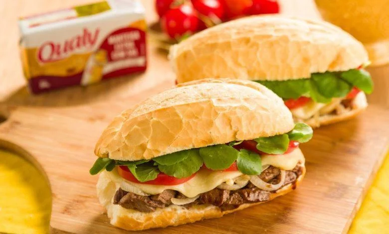

Ingredientes
- 1 Pão
- maionese
- 1 Cebola média
- 1 Bife
- 2 Fatias de mussarella
- 4 Rodelas de tomate
- Sal
- Pimenta do reino
- 3 Folhas de rúcula
- Manteiga
Mode de Preparo
- Corte o bife em tirinhas e tempere com pimenta do reino
- Leve o bife para a frigideira com a manteiga para dourar
- Corte o pão
- passe maionese no pão
- Coloque o bife e o queijo
- Finalize com a rúcula
O resultado deve ficar parecido com este
